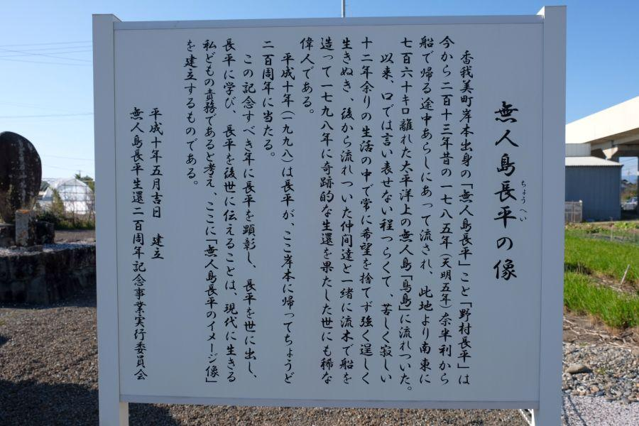

あだ名は無人島。太平洋一人ぼっちを経験した漂流民 < 無人島長平 / 高知県香南市香我美町岸本 >
澄み渡る土佐の青空に照らされる こちらの銅像(FRP製)。
人呼んで、
"無人島長平"
"東洋のロビンソン・クルーソー"
全国一の銅像好き県・高知県にある数多くの人物銅像の中で、こちらの方の経歴は、異彩を放つものとして記憶されています。
"無人島" と呼ばれた人物
野村長平(のむらちょうへい)
宝暦12年(1762)
土佐國岸本浦(現高知県香南市香我美町岸本)生まれ。

天明5年(1785) 1月30日
廻船水夫であった長平は、土佐藩の御蔵米を この地・赤岡から田野・奈半利へ運んで戻る際に嵐に遭う。
藩政下の鎖国時代、領民が他国へ逃亡することを防ぐために 庶民が所有する船は 簡素な造りのものしか認められておらず、舵や帆柱を失った長平の船は 漂流船となった。
絶海の孤島・鳥島に漂着
船は土佐沖を流れる黒潮に乗ったとされ、12日後に鳥島(伊豆諸島南部)に漂着。
この時点では 長平以外にも仲間の乗組員が3名居たが、2年以内に相次いで死亡。絶海の孤島で単独生活が始まった。
鳥島での生活は 雨風の当たらない岩窟に居を構え、食べ物は島に生息するアホウドリの肉と卵、少量の海産物など。当初は火器を持っていなかったため、それらを生か乾燥して食した。
飲用水はアホウドリの卵の殻に 天水(雨水)や湧水を貯め、衣類はアホウドリの羽を縫い繕って着衣とした。暦は 月を観察して、三日月を見た回数から おおよその年月を把握した。
新たな漂流民
天明8年(1788) 1月
長平漂流から3年後、大坂から11名が漂着
寛政2年(1790) 1月
日向国から6名が漂着
漂流生活で最大の18名のコミュニティとなると同時に、鍋や釜 火打石 大工道具など、一定の生活道具が揃った。
彼らは長平・大坂船の船頭・日向船の船頭の三人をリーダー格として 共同生活を送り、住居や溜め池等 最低限のインフラを整え、食糧の確保を分担して行った。
しかしながら 栄養失調や精神的な影響があり、寛政5年(1793)までに 4名が死亡した。
鳥島からの脱出を決意
寛政4年頃
鳥島漂着から数年経ったが 島の周囲に一向に他船が現れないことから、救助を諦め 島からの脱出を決意。
仲間の中に 船大工経験者がおり、流木や自身・他の漂着船を解体して船材を獲得。
釘などの金具は 鍛冶屋(かじや)経験者がおり、鞴(ふいご)を自作。拾い集めた金属を溶かして釘などの金具を製作し、船の部品に充てた。船の帆は 衣類を繋ぎ合わせたもので代用した。
また、製作中の船が 波にさらわれて失うのを防ぐため、造船作業を小高い丘の上で行っていたため、完成時にそこから船を海に下ろすための 幅5m弱の道を、岩盤をノミで削るなどして 自分たちで開削。完成した9mの船を海に下ろすことができた。
島からの脱出、国元への帰還
寛政9年(1797) 6月8日
生存者14名全員が完成した船に乗り込み、鳥島を脱出。
この時、自らの漂流生活の経験や 生活の知恵等を記した書類(木製)と、使用した道具一式を 洞窟に納め、その在り処を示す立て札を立てている。
鳥島へ漂着した漂流者の生活便宜を図る目的があり、後年 ジョン万次郎らが鳥島に漂着した際などには 命と等しい生活の助けとなっている。
長平らは数日の航海を経て 青ヶ島(現青ヶ島村)経由で八丈島(現八丈町)に到着。当時 幕府の直轄地であった八丈島の代官所で 取り調べを受けた後、幕府の御用船で江戸へ送られた。
江戸に着いた一行は 本格的な取り調べが行われた後 国元へ帰ることを許され、それぞれの故郷へ帰ることができた。
土佐國岸本に戻った長平を待っていたのは...
寛政10年(1798) 1月19日
長平は土佐に帰還。
遭難から約13年の年月が流れていた 地元岸本では、ちょうど13回忌が行われている最中だったとされ、長平の帰宅は驚きと大歓喜で迎えられたという。
長年の漂流生活を経て 長平は37歳となっていたが、土佐藩から 「野村」 姓を名乗ることを許された。
各地で漂流の体験談を語る等しながら 収入を得、妻子にも恵まれ 数奇な60年の生涯を全うした。
戦前に立てられた無人島長平像横の石碑には、事の顛末が記されている。
文政4巳年(1821) 四月●日(判別不明)
長平が亡くなった際に立てられた墓石には、土佐藩から名乗ることを許された 野村姓と、彼のあだ名であった "無人島" が刻まれています。
関連記事
2018,6/23 四国最南端の地から出た、日本人米国留学生第一号 < ジョン万次郎 / 高知県土佐清水市 >
近隣
2017,12/7 高知龍馬空港近く、かつての海軍基地の遺構 < 前浜掩体壕群 / 高知県 >
2017,1/13 四国にもあった特攻部隊 < 白菊隊 / 高知・徳島>
2018,3/19 新旧が混在する土佐藩ゆかりの港 < 手結港 / 高知県 >
2018,12/8 ユニークな駅名の高知県の鉄道交通中心地 < 後免駅 / 高知県南国市 >
無人島長平の像
< 自家用車 >
高松駅から 約2時間10分、134km
高知龍馬空港から 約15分、7.4km
< 公共交通機関 >
土佐くろしお鉄道 香我美駅下車 すぐ
※ 主な地点からの最速・最短距離